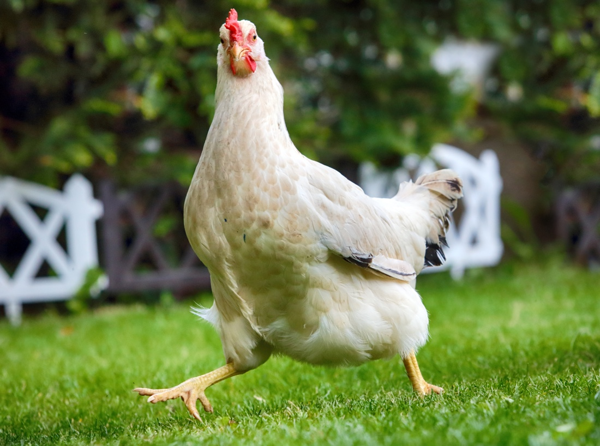
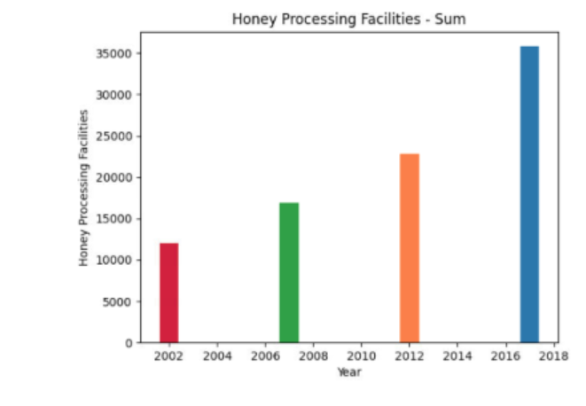
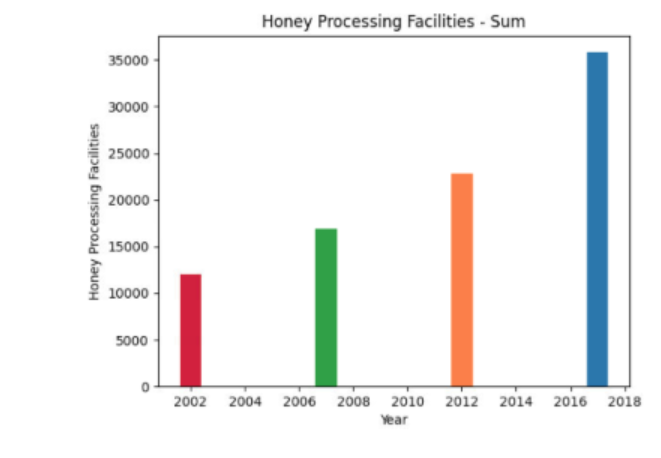
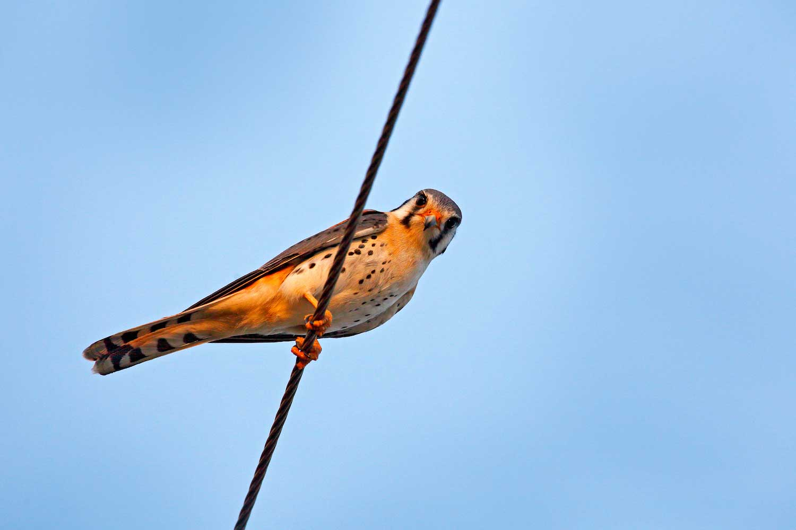

1.1.9 Project: Crossy Road
We created a game with colorful mechanics which imaitated the experience of playing crossy road wthin my program.

1.2.5 Project: Flappy Bird
We made a game using pygame to import sprite, and to create the illusion on an endlessly scrolling game, primarily running using a while loop.

Scratch Project: Click the Birbs!
We designed a game using scratch which used a timer to control out game, as well as scoring and the use of multiple designs with a consistent theme.
Scratch Project: Swim Ducks Swim!
I designed a game that features a duck collecting leaves and avoiding logs on a lake, it has a leaderboard and has randomized and timed generations of the obstacles. The goal is to win so be in it to win it!

 

3.2.4 Project: Making Meaning in Data
We took and cleaned data to graph and compare it to other states in terms of their honey production.

4.1.4 Project: Understanding Complex Systems
We used the pollution simulation from NetLogo and analyzed the simulation and the main idea and real world issues it's addressing.

Project 3.1.6: Lost Rover
In this project we looked at data points to determine where the rover is located, given the information from the various sensors. Which we ended up concluding that the rover was located in the inland forest.